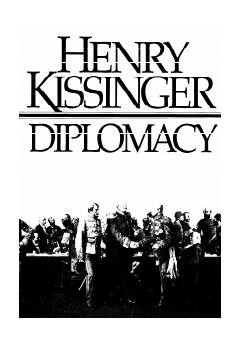

DJahon diplomatiyasi tarixi va xalqaro munosabatlar san'atiga bag'ishlangan monumental asar.
Ushbu fundamental asarda muallif diplomatiya tarixi, kuchlar muvozanati va jahon siyosatining uch asrlik rivojlanish jarayonini tahlil qiladi. Shuningdek, o'zining shaxsiy muzokaralari va dunyo yetakchilari bilan kechgan uchrashuvlari asosida davlatlararo munosabatlarning sirli jihatlarini ochib beradi.